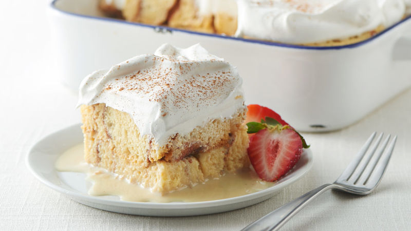

Home
Tres Leches Temptation: A Milky Delight

Indulge in the luscious allure of Tres Leches, a dessert that dances between decadence and delicate charm. This iconic cake, soaked in a trio of milks, promises a moist, flavorful bite that transports you straight to dessert nirvana. Whether you're a seasoned Tres Leches enthusiast or a curious first-timer, our recipe is tailored to dazzle your taste buds and immerse you in its creamy richness. Dive in, and let this culinary gem sweep you off your feet!
Ingredients
For the Cake:
- All-purpose flour
- Baking Powder
- Salt
- Unsalted butter
- Granulated Sugar
- Eggs
- Vanilla extract
For the Tres Leches Mixture:
- Evaporated Milk
- Sweetened condensed milk
- Heavy cream or whole milk
For the Topping:
- Whipped cream
- Ground cinnamon (for dusting)
- Fresh Fruit for garnish
- Maraschino cherries
Steps
For the Cake:
- Preheat & Prepare: Preheat your oven to 350°F (175°C). Grease and flour a 9x13 inch baking dish or a similar-sized pan.
- Dry Ingredients: In a medium bowl, whisk together the all-purpose flour, baking powder, and salt. Set aside.
- Cream Butter & Sugar: In a large bowl, cream together the unsalted butter and granulated sugar until light and fluffy.
- Add Eggs: Beat in the eggs one at a time, ensuring each egg is fully incorporated before adding the next.
- Mix in Vanilla: Stir in the vanilla extract.
- Combine: Gently fold in the flour mixture a little at a time until just blended.
- Bake: Pour the batter into the prepared pan and spread it out evenly. Bake in the preheated oven for about 30 minutes, or until a toothpick or knife inserted into the center comes out clean. Remove from oven and allow it to cool.
For the Tres Leches Mixture:
- Combine Milks: In a mixing bowl, whisk together the evaporated milk, sweetened condensed milk, and heavy cream (or whole milk) until well combined.
- Soak the Cake: Once the cake has cooled, use a fork to poke holes all over the surface of the cake. Slowly pour the milk mixture over the cake, ensuring the liquid is absorbed and the cake is fully saturated.
For the Topping:
- Whip the Cream: In a mixing bowl, whip the heavy cream until soft peaks form. You can add a touch of sugar or vanilla extract for flavor, if desired.
- Top the Cake: Spread the whipped cream over the soaked cake evenly.
- Garnish: Optionally, sprinkle with a dusting of ground cinnamon. Decorate with fresh fruits or maraschino cherries as desired.
- Refrigerate & Serve: efrigerate the cake for at least 4 hours, or preferably overnight, to allow it to soak up the milk mixture. Slice and serve chilled./li>